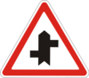

1. Общие положения
Лицо, которое создало такие условия, обязано незамедлительно принять меры к обеспечению безопасности дорожного движения на этом участке дороги и принять все возможные меры для устранения препятствий, а если это невозможно, предупредить о них других участников дорожного движения, сообщить в подразделение милиции, владельцу дороги или уполномоченному им органу.
- автобус – автомобиль с количеством мест для сидения более девяти, включая место водителя, который по своей конструкции и оборудованию предназначен для перевозки пассажиров и их багажа с обеспечением необходимого комфорта и безопасности;
-
автомагистраль
– автомобильная дорога, которая:
- – специально построена и предназначена для движения транспортных средств, не предназначена для въезда на прилегающую территорию или выезда с нее;
- – имеет для каждого направления движения отдельные проезжие части, отделенные друг от друга разделительной полосой;
- – не пересекает на одном уровне другие дороги, железнодорожные и трамвайные пути, пешеходные и велосипедные дорожки, пути прохода животных, имеет ограждения на обочинах и разделительной полосе и ограждена сеткой;
-
– обозначена дорожным знаком
 5.1;
5.1;
- автомобильная дорога, улица (дорога) – часть территории, в частности в населенном пункте, со всеми расположенными на ней сооружениями (мостами, путепроводами, эстакадами, надземными и подземными пешеходными переходами) и средствами организации дорожного движения, предназначенная для движения транспортных средств и пешеходов и ограниченная по ширине внешним краем тротуаров или краем полосы отвода. Этот термин включает также специально проложенные временные дороги, кроме произвольно накатанных дорог (колей);
- автомобильные дороги государственного значения – автомобильные дороги общего пользования, к которым относятся международные, национальные и региональные автомобильные дороги, обозначенные соответствующими дорожными знаками;
- автопоезд (транспортный состав) – механическое транспортное средство, соединенное с одним или несколькими прицепами с помощью сцепного устройства;
- безопасная дистанция – расстояние до транспортного средства, движущегося впереди по той же самой полосе, которое в случае его внезапного торможения или остановки даст возможность водителю транспортного средства, движущегося сзади, предотвратить столкновение без осуществления какого-либо маневра;
- безопасная скорость – скорость, при которой водитель имеет возможность безопасно управлять транспортным средством и контролировать его движение в конкретных дорожных условиях;
- безопасный интервал – расстояние между боковыми частями движущихся транспортных средств, или между ними и другими объектами, при котором гарантирована безопасность дорожного движения;
- буксировка – перемещение одним транспортным средством другого транспортного средства, которое не относится к эксплуатации автопоездов (транспортных составов), на жесткой или гибкой сцепке или способом частичной погрузки на платформу или специальное опорное приспособление;
- велосипед – транспортное средство, кроме инвалидных колясок, приводимое в движение мускульной силой человека, находящегося на нем;
- велосипедист – лицо, управляющее велосипедом;
-
велосипедная дорожка
– выполненная в пределах дороги или вне ее дорожка с покрытием, которая предназначена для движения на велосипедах и обозначена дорожным знаком
 4.12;
4.12;
- видимость в направлении движения – максимальное расстояние, на котором с места водителя можно четко распознать границы элементов дороги и размещение участников движения, которое дает возможность водителю ориентироваться во время управления транспортным средством, в частности, для выбора безопасной скорости и осуществления безопасного маневра;
- владелец транспортного средства – физическое или юридическое лицо, обладающее имущественными правами на транспортное средство и подтвержденными соответствующими документами;
- водитель – лицо, управляющее транспортным средством и имеющее удостоверение водителя (удостоверение тракториста-машиниста, временное разрешение на право управления транспортным средством, временный талон на право управления транспортным средством) соответствующей категории. Водителем также является лицо, которое обучает управлению транспортным средством, находясь непосредственно в транспортном средстве;
- вынужденная остановка – прекращение движения транспортного средства из-за его технической неисправности или опасности, создаваемой перевозимым грузом, состоянием участника дорожного движения, появлением препятствия для движения;
- габаритно-весовой контроль – проверка габаритных и весовых параметров транспортного средства (в том числе механического транспортного средства), прицепа и груза на соответствие установленным нормам габаритов (ширина, высота от поверхности дороги, длина транспортного средства) и нагрузки (фактическая масса, осевая нагрузка), которая проводится в соответствии с установленным порядком на стационарных или передвижных пунктах габаритно-весового контроля;
- газон – участок однородной территории с дерновым покровом, искусственно созданный путем посева и выращивания дернообразующих трав (преимущественно многолетних злаков) или одернованием;
-
главная дорога
– дорога с покрытием относительно грунтовой или обозначаемая знаками
1.22,

1.23.1–1.23.4
и
 2.3.
Наличие на второстепенной дороге покрытия непосредственно перед перекрестком не приравнивает ее по значению к пересекаемой;
2.3.
Наличие на второстепенной дороге покрытия непосредственно перед перекрестком не приравнивает ее по значению к пересекаемой;
- грузовой автомобиль – автомобиль, который по своей конструкции и оборудованию предназначен для перевозки грузов;
- дневные ходовые огни – внешние световые устройства белого цвета, предусмотренные конструкцией транспортного средства, установленные спереди транспортного средства и предназначенные для улучшения видимости транспортного средства во время его движения в светлое время суток;
- дорожная обстановка – совокупность факторов, характеризующих дорожные условия, наличие препятствий на определенном участке дороги, интенсивность и уровень организации дорожного движения (наличие и состояние дорожной разметки, дорожных знаков, дорожного оборудования, светофоров), которые должен учитывать водитель при выборе скорости, полосы движения и приемов управления транспортным средством;
- дорожно-транспортное происшествие – событие, которое произошло во время движения транспортного средства, вследствие которого погибли или ранены люди или причинен материальный ущерб;
- дорожные работы – работы, связанные со строительством, реконструкцией, ремонтом или содержанием автомобильной дороги (улицы), искусственных сооружений, сооружений дорожного водоотвода, инженерного обустройства, установкой (ремонтом, заменой) технических средств организации дорожного движения;
- дорожные условия – совокупность факторов, которые характеризуют (с учетом времени года, периода суток, атмосферных явлений, освещенности дороги) видимость в направлении движения, состояние поверхности проезжей части (чистота, ровность, шероховатость, сцепление), а также ее ширину, величину уклонов на спусках и подъемах, виражей и закруглений, наличие тротуаров или обочин, средств организации дорожного движения и их состояние;
- железнодорожный переезд – пересечение дороги с железнодорожными путями на одном уровне;
- жилая зона – дворовые территории, а также части населенных пунктов, обозначенные дорожным знаком 5.31;
- колонна пешеходов – организованная группа людей,движущихся по проезжей части в одном направлении;
- колонна транспортных средств – организованная группа из трех и более транспортных средств, движущихся вместе в одном направлении непосредственно друг за другом с постоянно включенным ближним светом фар;
- край проезжей части (для нерельсовых транспортных средств) – видимая условная или обозначенная дорожной разметкой линия на проезжей части в месте ее прилегания к обочине, тротуару, газону, разделительной полосе, полосе для движения трамваев, велосипедной или пешеходной дорожке;
- крайнее положение на проезжей части – положение транспортного средства на расстоянии от края проезжей части (середины проезжей части или разделительной полосы), которое не дает возможности двигаться попутному транспортному средству (в том числе двухколесному) еще ближе к краю проезжей части (середине проезжей части или разделительной полосе);
- легковой автомобиль – автомобиль с количеством мест для сидения не более девяти, включая место водителя, который по своей конструкции и оборудованию предназначен для перевозки пассажиров и их багажа с обеспечением необходимого комфорта и безопасности;
- маневрирование (маневр) – начало движения, перестроение транспортного средства в движении с одной полосы на другую, поворот направо или налево, разворот, съезд с проезжей части, движение задним ходом;
- маршрутные транспортные средства (транспортные средства общего пользования) – автобусы, микроавтобусы, троллейбусы, трамваи и такси, движущиеся по установленным маршрутам и имеющие определенные места на дороге для посадки (высадки) пассажиров;
- механическое транспортное средство – транспортное средство, приводимое в движение с помощью двигателя. Этот термин распространяется на тракторы, самоходные машины и механизмы, а также троллейбусы и транспортные средства с электродвигателем мощностью более 3 кВт;
- микроавтобус – одноэтажный автобус с количеством мест для сидения не более семнадцати, включая место водителя;
- мопед – двухколесное транспортное средство, имеющее двигатель с рабочим объемом до 50 куб. см или электродвигатель мощностью до 4 кВт;
- мост – сооружение, предназначенное для движения через реку, овраг и прочие препятствия, границами которого являются начало и конец пролетных сооружений;
- мотоцикл – двухколесное механическое транспортное средство с боковым прицепом или без него, имеющее двигатель с рабочим объемом 50 куб. см и более. К мотоциклам приравниваются мотороллеры, мотоколяски, трехколесные и прочие механические транспортные средства, разрешенная максимальная масса которых не превышает 400 кг;
-
населенный пункт
– застроенная территория, въезды на которую и выезды с которой обозначаются дорожными знаками
 5.45, 5.46, 5.47, 5.48;
5.45, 5.46, 5.47, 5.48;
- недостаточная видимость – видимость дороги в направлении движения менее 300 м в сумерках, в условиях тумана, дождя, снегопада и т. п.;
- обгон – опережение одного или нескольких транспортных средств, связанное с выездом на полосу встречного движения;
- обзорность – объективная возможность видеть дорожную обстановку с места водителя;
- обочина – выделенный конструктивно или сплошной линией дорожной разметки элемент автомобильной дороги, прилегающий непосредственно к внешнему краю проезжей части, расположенный с ней на одном уровне и не предназначенный для движения транспортных средств, кроме случаев, предусмотренных данными Правилами. Обочина может использоваться для остановки и стоянки транспортных средств, движения пешеходов, мопедов, велосипедов (при отсутствии тротуаров, пешеходных, велосипедных дорожек или при невозможности передвигаться по ним), гужевых повозок (саней);
- ограниченная обзорность – видимость дороги в направлении движения, которая ограничена геометрическими параметрами дороги, придорожными инженерными сооружениями, насаждениями и другими объектами, а также транспортными средствами;
-
опасность для движения
– изменение дорожной обстановки (в том числе появление движущегося объекта, который приближается к полосе движения транспортного средства или пересекает ее) или технического состояния транспортного средства, которое угрожает безопасности дорожного движения и вынуждает водителя немедленно уменьшить скорость или остановиться.
Отдельным случаем опасности для движения является движение в пределах полосы транспортного средства другого транспортного средства навстречу общему потоку;
- опережение – движение транспортного средства со скоростью, превышающей скорость попутного транспортного средства, движущегося рядом по смежной полосе;
- ослепление – физиологическое состояние водителя вследствие воздействия света на его зрение, когда водитель объективно не имеет возможности обнаружить препятствия или распознать границы элементов дороги на минимальном расстоянии;
- оставление места дорожно-транспортного происшествия – действия участника дорожно-транспортного происшествия, направленные на сокрытие факта такого происшествия или обстоятельств его совершения, которые вызвали необходимость проведения работниками милиции мероприятий по установлению (розыску) этого участника и (или) розыску транспортного средства;
- остановка – прекращение движения транспортного средства на время до 5 минут или более , если это необходимо для посадки (высадки) пассажиров или погрузки (разгрузки) груза, выполнения требований данных Правил (предоставление преимущества в движении, выполнение требований регулировщика, сигналов светофора и т. п.);
- островок безопасности – техническое средство регулирования дорожного движения на наземных пешеходных переходах, конструктивно выделенное над проезжей частью дороги и предназначенное для использования в качестве защитного элемента для остановки пешеходов при переходе проезжей части дороги. К островку безопасности относится часть разделительной полосы, через которую пролегает пешеходный переход;
- пассажир – лицо, которое пользуется транспортным средством и пребывает в нем, но не причастное к управлению им;
- перевозка организованных групп детей – одновременная перевозка десяти и более детей с руководителем, ответственным за их сопровождение во время поездки (на группу из тридцати и более детей назначается дополнительно медицинский работник);
- перекресток – место пересечения, прилегания или разветвления дорог на одном уровне, границей которого являются воображаемые линии между началом закруглений краев проезжей части каждой из дорог. Не считается перекрестком место прилегания к дороге выезда с прилегающей территории;
- пешеход – лицо, принимающее участие в дорожном движении вне транспортных средств и не выполняющее на дороге какую-либо работу. К пешеходам приравниваются также лица, передвигающиеся в инвалидных колясках без двигателя, ведущие велосипед, мопед, мотоцикл, везущие санки, тележку, детскую или инвалидную коляску;
-
пешеходная дорожка
– дорожка с покрытием, предназначенная для движения пешеходов, выполненная в пределах дороги или вне ее и обозначенная знаком
 4.13;
4.13;
-
пешеходный переход
– участок проезжей части или инженерное сооружение, предназначенное для движения пешеходов через дорогу. Пешеходные переходы обозначаются дорожными знаками

 5.35.1–5.37.2,
дорожной разметкой
5.35.1–5.37.2,
дорожной разметкой

 1.14.1–1.14.3,
пешеходными светофорами.
1.14.1–1.14.3,
пешеходными светофорами.
При отсутствии дорожной разметки границы пешеходного перехода определяются расстоянием между дорожными знаками или пешеходными светофорами, а на перекрестке при отсутствии пешеходных светофоров, дорожных знаков и разметки – шириной тротуаров или обочин.
Регулируемым считается пешеходный переход, движение по которому регулируется светофором или регулировщиком, нерегулируемым – пешеходный переход, на котором нет регулировщика, светофоры отсутствуют или выключены, или работают в режиме мигания желтого сигнала;
- полоса движения – продольная полоса на проезжей части шириной не менее 2,75 м, которая обозначена или не обозначена дорожной разметкой и предназначена для движения нерельсовых транспортных средств;
- преимущество – право на первоочередное движение относительно других участников дорожного движения;
- препятствие для движения – неподвижный объект в пределах полосы движения транспортного средства или объект, движущийся попутно в пределах этой полосы (за исключением транспортного средства, движущегося навстречу общему потоку транспортных средств) и вынуждающий водителя маневрировать или уменьшать скорость вплоть до остановки транспортного средства;
- прилегающая территория – территория, которая прилегает к краю проезжей части и не предназначена для сквозного проезда, а предназначена лишь для въезда во дворы, на стоянки, автозаправочные станции, строительные площадки и т. п. или выезда с них;
- прицеп – транспортное средство, предназначенное для движения только в соединении с другим транспортным средством. К этому виду транспортных средств относятся также полуприцепы и прицепы-роспуски;
- проезжая часть – элемент дороги, предназначенный для движения нерельсовых транспортных средств. Дорога может иметь несколько проезжих частей, границами которых являются разделительные полосы;
- путепровод – инженерное сооружение мостового типа над другой дорогой (железной дорогой) в месте их пересечения, обеспечивающее движение по ней на разных уровнях и дающее возможность съезда на другую дорогу;
-
разделительная полоса
– выделенный конструктивно или при помощи сплошных линий дорожной разметки
 1.1
или
1.2
элемент автомобильной дороги, который разделяет смежные проезжие части. Разделительная полоса не предназначена для движения или стоянки транспортных средств. При наличии на разделительной полосе тротуара на нем разрешается движение пешеходов;
1.1
или
1.2
элемент автомобильной дороги, который разделяет смежные проезжие части. Разделительная полоса не предназначена для движения или стоянки транспортных средств. При наличии на разделительной полосе тротуара на нем разрешается движение пешеходов;
- разрешенная максимальная масса – масса снаряженного транспортного средства с грузом, водителем и пассажирами, которая установлена технической характеристикой транспортного средства как максимально допустимая;
- разрешенная максимальная масса автопоезда – это сумма разрешенной максимально допустимой массы каждого транспортного средства, входящего в состав автопоезда;
-
регулировщик
– работник милиции, регулирующий дорожное движение в форменной одежде повышенной видимости с элементами из светоотражающего материала с помощью жезла, свистка.
К регулировщикам приравниваются работники военной инспекции безопасности дорожного движения, дорожно-эксплуатационной службы, дежурный на железнодорожном переезде, паромной переправе, которые имеют соответствующие удостоверения, нарукавную повязку, жезл, диск с красным сигналом или светоотражателем, красный фонарь или флажок и выполняют регулирование в форменной одежде;
- рельсовое транспортное средство – трамвай и платформы со специальным оборудованием, которые двигаются по трамвайным путям. Все другие транспортные средства, которые принимают участие в дорожном движении, считаются нерельсовыми;
- стоянка – прекращение движения транспортного средства на время более 5 минут по причинам, несвязанным с необходимостью выполнения требований данных Правил, посадкой (высадкой) пассажиров, погрузкой (разгрузкой) груза;
- темное время суток – часть суток от захода до восхода солнца;
- тормозной путь – расстояние, которое проходит транспортное средство время экстренного торможения с начала осуществления воздействия на механизм управления тормозной системой (педаль, рукоятку) до места его остановки;
- трамвайный путь – элемент дороги, предназначенный для движения рельсовых транспортных средств, который ограничивается по ширине специально выделенной отмосткой трамвайной линии или дорожной разметкой. По трамвайному пути допускается движение нерельсовых транспортных средств в соответствии с разделом 11 данных Правил;
- транспортное средство – устройство, предназначенное для перевозки людей и (или) грузов, а также установленного на нем специального оборудования или механизмов;
- тротуар – элемент дороги, предназначенный для движения пешеходов, который прилегает к проезжей части или отделен от нее газоном;
- усовершенствованное покрытие – цементобетонное, асфальтобетонное, железобетонное или армобетонное сборное покрытие, покрытия из брусчатки и мозаики, сборное покрытие из малоразмерных бетонных плит, из щебня и гравия, обработанных органическими и вяжущими материалами;
- уступить дорогу – требование к участнику дорожного движения не продолжать или не возобновлять движение, не осуществлять каких-либо маневров (за исключением требования освободить занимаемую полосу движения), если это может вынудить других участников дорожного движения, имеющих преимущество, изменить направление движения или скорость;
- участник дорожного движения – лицо, принимающее непосредственное участие в процессе движения на дороге как пешеход, водитель, пассажир, погонщик животных;
- эксплуатация транспортного состава – транспортирование тягачом прицепа в соответствии с инструкцией по его использованию (соответствие прицепа тягачу, наличие страховочного соединения, единой системы сигнализации, освещения и т. п.);
- эстакада – инженерное сооружение для движения транспортных средств и (или) пешеходов, поднятие одной дороги над другой в месте их пересечения, а также для создания дороги на определенной высоте, не имеющей съездов на другую дорогу.